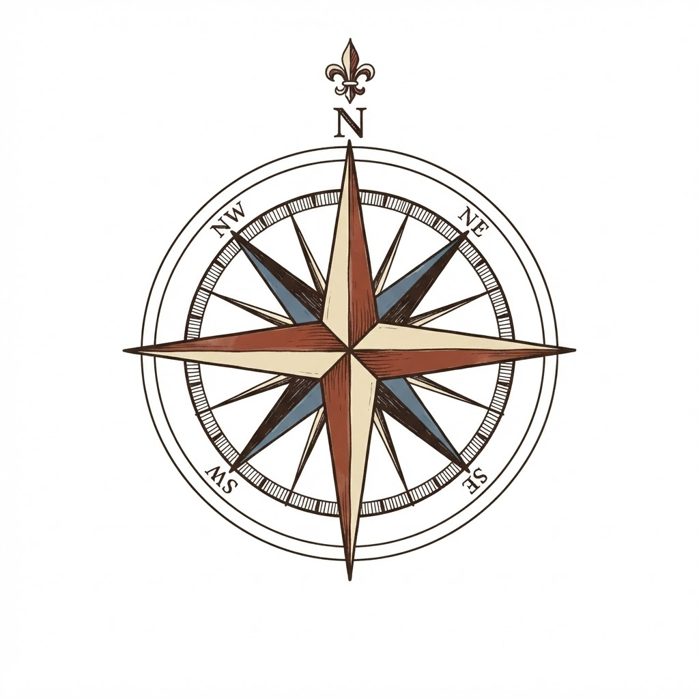
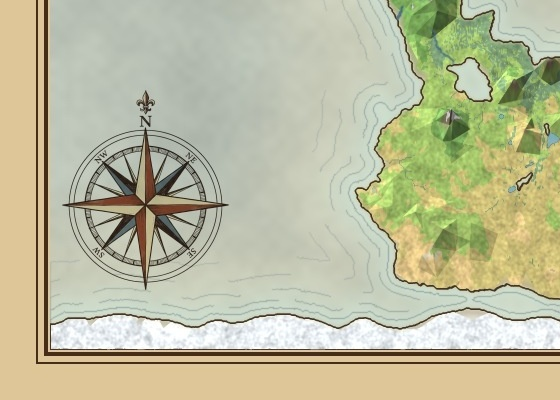
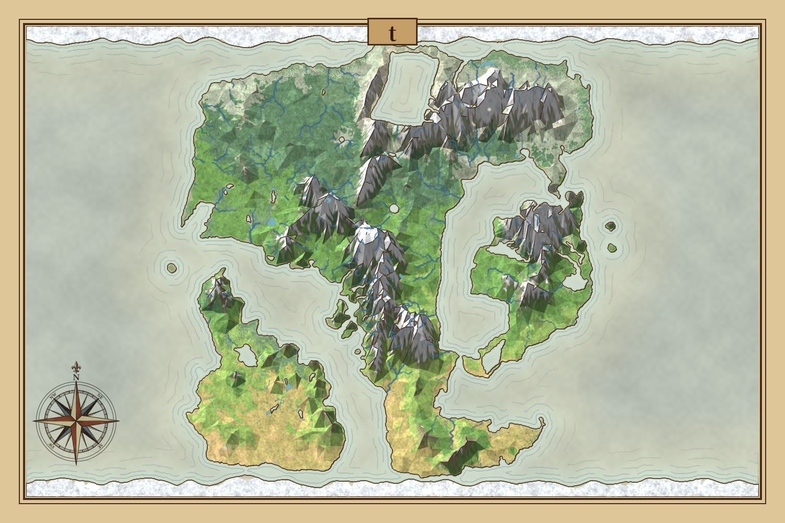
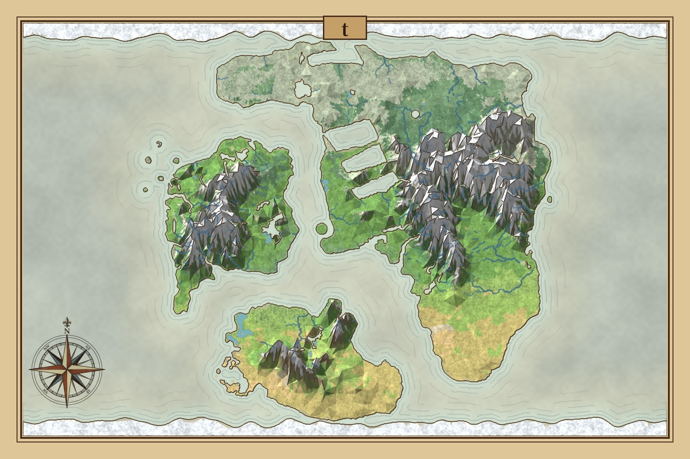
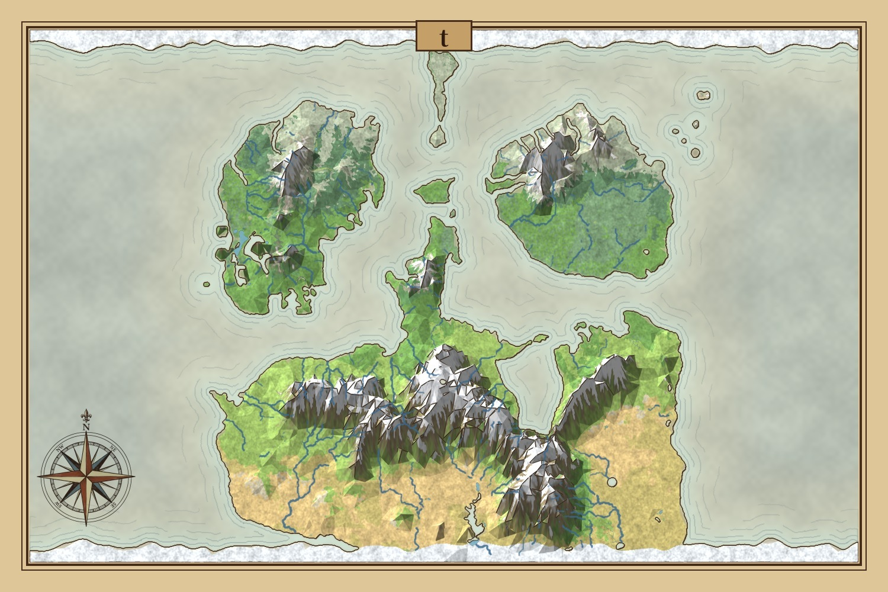
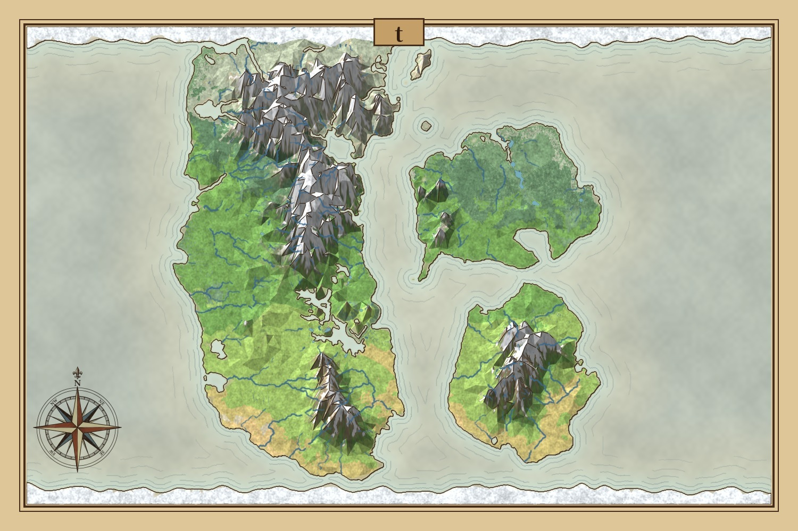
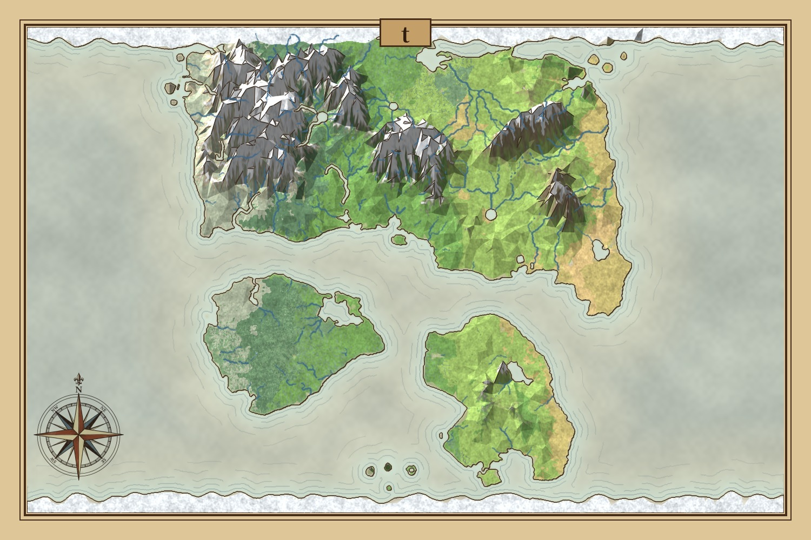

方位記号(Geminiが描いた絵を地図に置く・11-20)
概要: Geminiに描かせた方位記号(コンパスローズ)の絵を、地図の左下の海に重ねました。白い背景は、紙の色を変えない「乗算」という重ね方で消えます。地図の絵は川(mapstyle46)の上に重ねたものです。
元の絵(Gemini)

絵番号 E203
地図の左下(拡大)

絵番号 E204
全体(5世界)

絵番号 E205

絵番号 E206

絵番号 E207

絵番号 E208

絵番号 E209
目で見た評価
- 北のユリ紋と「N」、赤茶・青灰・生成りの星が、羊皮紙の海になじんだ。
- 注文では「N以外の文字は入れない」としたが、NE・SE・SW・NWも入っている(小さく、古地図らしい。残すか消すかはご判断)。
- 海の色の上に重ねるので、白い部分は海の色のまま見える(紙色に変えない)。
限界・未確認
- 各世界1枚・目視のみ。iPhoneでの見え方は未測定。
- 置き場所は左下の海に固定。世界によっては陸にかかる可能性があり、全世界の確認はまだ(5世界では左下は海)。
- 3D表示には未反映。絵の隅に重ねただけ。
- 縮尺(スケールバー)はまだ。PWGの「地図1マスが何kmか」を確認できておらず、嘘の距離は描かない。
次の一手: 方位記号の大きさ・位置・NE等の文字を判断していただき、縮尺(距離の決め方)に進む。
ハブにもどる